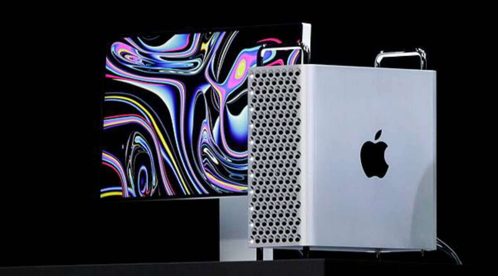
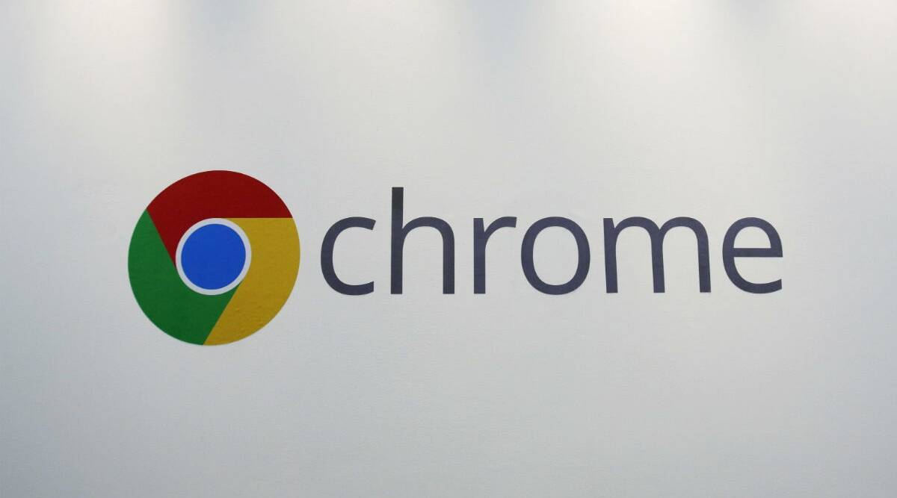

History of hardware at WWDC: Every device launched at Apple’s developer conference in the last few years
Apple’s Worldwide Developers Conference, or WWDC, perhaps the second most anticipated tech event after the company’s fall product
showcase, has always been known for focusing on its core platforms and software. But the biggest developer-centric event has also been
the launchpad for many high-profile hardware products over the years, including the HomePod and Mac Pro.
7 June 2021

WWDC 2021: Apple could add new iPad features, privacy tools
Apple Inc. will debut major software updates for the iPhone and iPad at its developers’ conference next week to an audience that has grown
increasingly critical of the company’s App Store policies.The virtual event beginning Monday will also include software updates for the Mac,
Apple Watch and Apple TV as well as tools developers can use to build apps. The company plans to discuss new privacy protections for
limiting data collection as well as health-tracking, notifications and messaging features.
7 June 2021

Chrome to get new ‘Safe Browsing’ features: All you need to know
Google will soon roll out a new Chrome 91 update, which will add new ‘Safe Browsing’ features. The new update will help Chrome users choose better
extensions and will offer enhanced protection against downloading malicious files on the web.So, if you download an unsafe extension, Chrome
will alert you via a dialogue box. Google says the extensions built using the Chrome Web Store Developer Program Policies will be considered
trusted by Enhanced Safe Browsing.
7 June 2021
Apple AirTags to get update to prevent unwarranted tracking; Android app as well
Apple is rolling out various features to its AirTags that are set to help prevent unwarranted tracking, according to reports.
Apple introduced AirTags earlier this year, and cited privacy and security as core features of the device. However, there were
legitimate concerns regarding the location tags tracking people without them realising it.
According to CNET, the company has confirmed that it’s adjusting its approach to its AirTags sensors and will change the time it takes for
AirTags to play an alert after it is separated from its owner.
7 June 2021
WhatsApp Fast Playback for voice messages: What it is and how to use it
WhatsApp introduced a new feature that lets users choose between multiple playback speeds while playing an audio file.
The new options let you listen to longer voice messages easily and can also be used to skip through large messages to get to a particular point.
This helps make the most of long voice messages, where it can sometimes be time-consuming to go through the entire message without skipping
on any details. The latest WhatsApp update for Android and iOS changes that with the introduction of WhatsApp’s new Fast Playback speeds.
There are two new playback speeds offered in the feature, taking the number of playable speeds to three.
7 June 2021
Microsoft Windows 11 tipped to be in the works; could be new Sun Valley update
Microsoft has been working on a successor to Windows 10 for a while now, and the company recently revealed that we may be able to see the new operating
system later this month. The new update is described as the biggest update since the debut of Windows 10 back in 2015.
This includes a substantial refresh in aspects like features and user interface. The Sun Valley project will give Windows 10 a new Start menu and Taskbar layout,
icons, sounds, app designs, and fluid animations. It’s also being said Microsoft could revamp the Windows App store.
7 June 2021